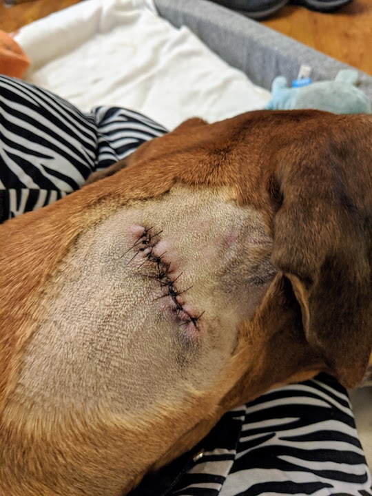
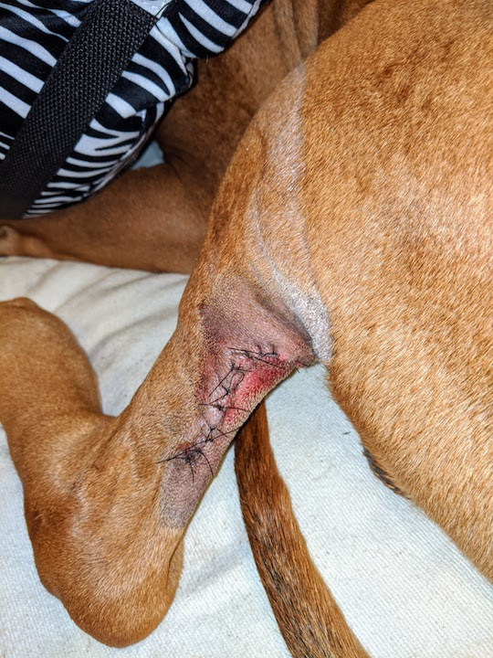

Hi seniors, and welcome to my first diary entry for spring 2020. I've been home for a week, just like all of you. Mostly, I've just been taking care of my dog, Barlow, because he had surgery last Thursday.
Right now, this web page looks pretty basic. Over time, we'll learn how to make it look WAY BETTER!
This is my 2nd diary entry. Here is my dog Barlow, wearing an Elizabethan Donut. He likes it better than a cone. It keeps him from licking his wounds, where the stitches are. Want to see?
 